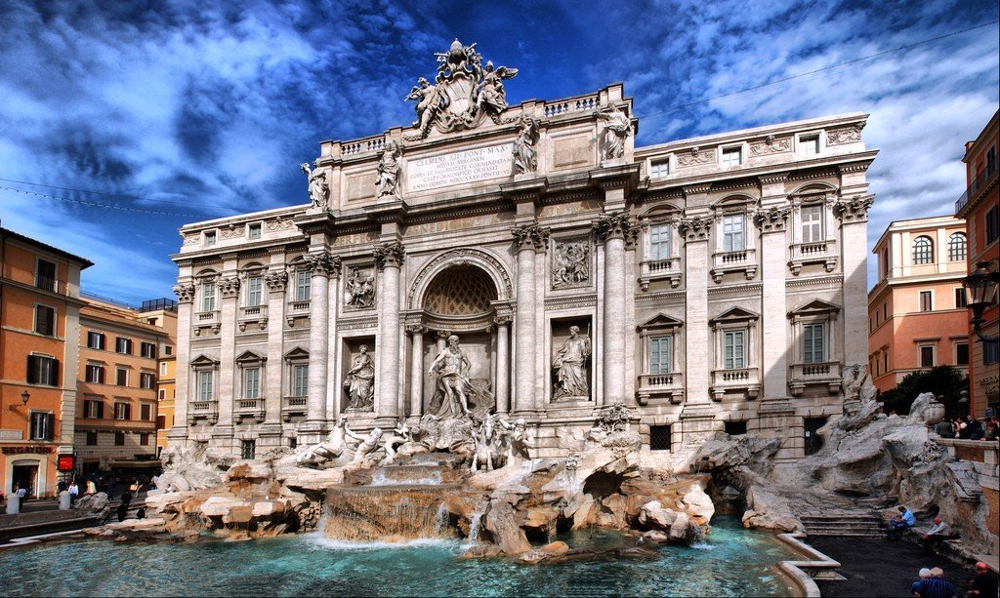
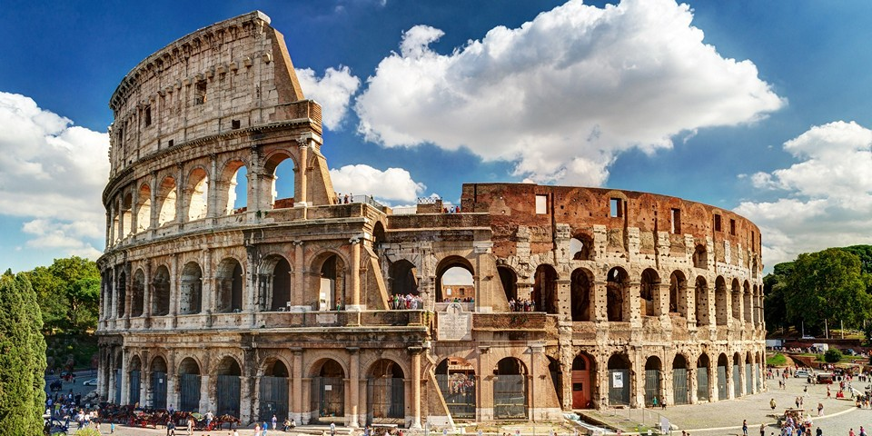
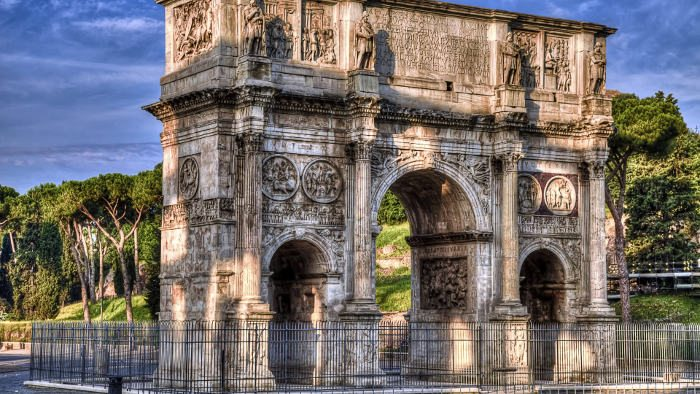
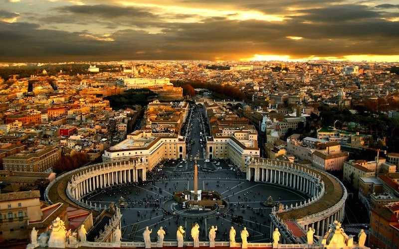
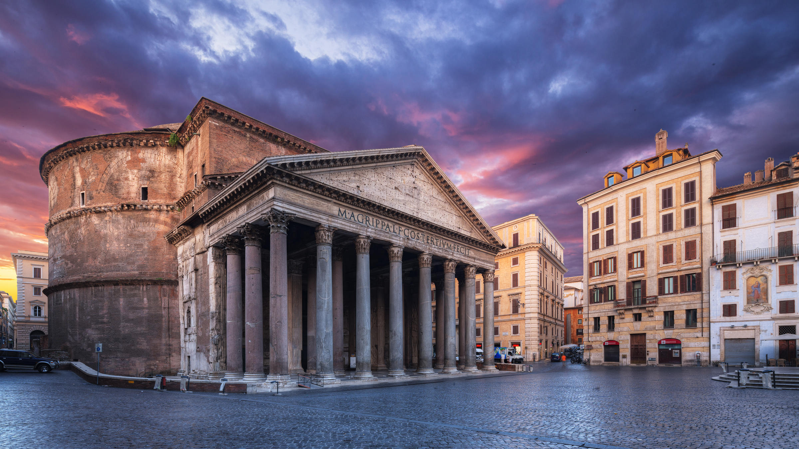

Цікаві факти про Рим
Одна з найбільших агломерацій Європи й одне з найдавніших міст світу, Рим, пережив багато чого — зміну влади, народження, розквіт і падіння імперій, епохи процвітання та важкі роки. Мабуть, на всьому світі важко було б знайти інше місто, що може похвалитися такою ж багатою і насиченою історією. Не дивно, що сюди щороку спрямовується потік туристів, що ніколи не вичерпується.
1. Найвідоміша римська пам'ятка - Колізей. Мало хто знає, що тут щоночі розкидають каміння, тому що багато туристів хочуть прихопити з собою «шматок Колізею» на згадку. Якби не цей захід, стародавню будівлю давно розібрали б на частини. До речі, така ж практика використовується і в грецьких Афінах.
2. Засновано велике місто було, страшно подумати — 753 року до нашої ери.
3. Знаменита фраза «всі дороги ведуть до Риму» з'явилася завдяки тому, що в епоху розквіту Римської імперії держава збудувала на своїй території понад 75 тисяч кілометрів доріг. Деякі з них уціліли й досі.
4. Вже дві тисячі років тому у цьому місті були водогін, фонтанчики з питною водою та громадські туалети.
5. Таке архітектурне рішення, як арка, було винайдено саме тут.
6. Рим – єдине у світі місто, на території якого є незалежна держава. Ватикан відомий як найменша держава у світі. Щоб відвідати його, туристам доводиться стояти у багатокілометрових чергах.
7. Римський Пантеон, побудований в 27 році до нашої ери - єдиний давньоримський монумент, що практично ідеально зберігся до наших днів.
8. У цьому місті є музей макаронів.
9. Щороку 21 квітня тут шумно святкують День народження міста, яке нерідко називають Вічним.
10. Колізей здатний вмістити до 50 тисяч глядачів одночасно.
11. Італійці, сучасні жителі Риму вважають себе нащадками римлян, хоча, строго кажучи, це не зовсім так.